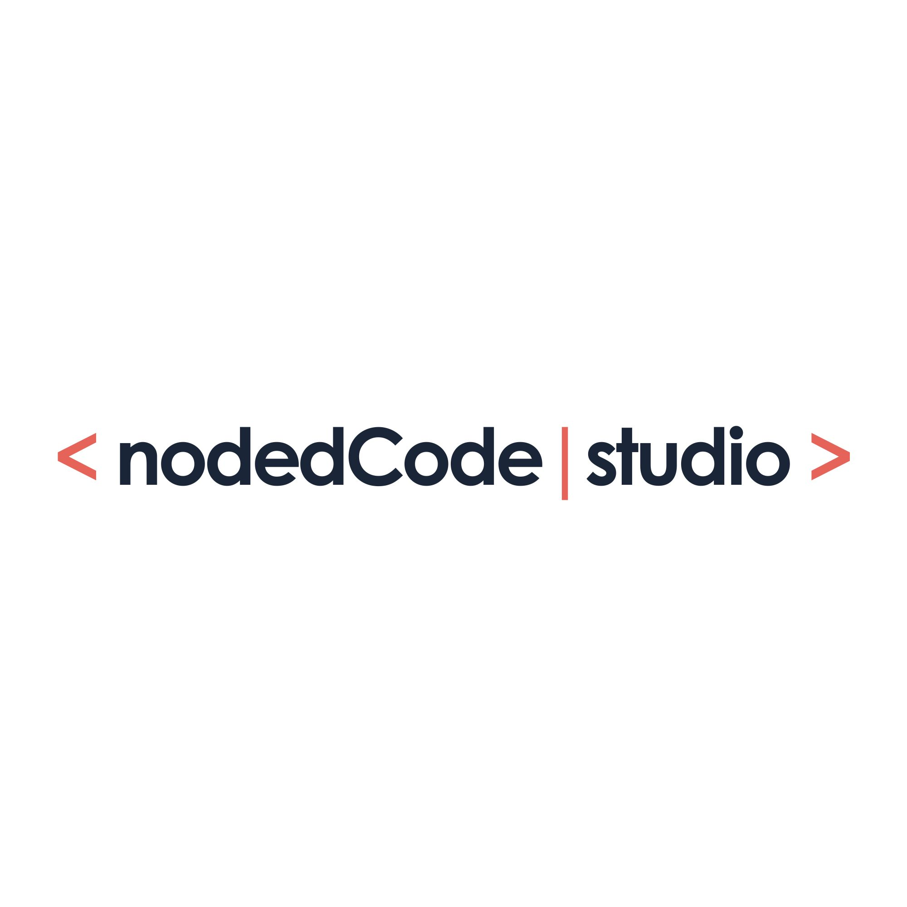

Building an Air-Gapped Client-Side PDF Redactor & Metadata Cleaner: Technical Case Study
Summary: This engineering case study explores the architecture, security guarantees, and technical implementation of Redact, an air-gapped web application built by nodedCode Studio. Operating 100 percent in browser memory, Redact eliminates remote server uploads, flattens PDF text streams through offscreen canvas rasterization, and purges hidden document author metadata. Try the live tool at redact.nodedcode.studio.

Key Highlights & Takeaways
- Zero Server Egress: 100 percent browser RAM execution guarantees no confidential bytes leave the user device.
- Irreversible Text Destruction: High-DPI offscreen canvas rasterization flattens pages into PNG images, physically destroying underlying vector text streams.
- Complete Metadata Removal: Purges hidden document titles, author names, subject tags, creation timestamps, and revision histories.
- Touch-Friendly Responsive Workspace: Dedicated Redact Mode and Scroll Mode toggles ensure seamless operation across desktop and mobile browsers.
Whether you are a legal professional redacting court filings, a healthcare administrator handling patient records, a financial compliance officer sanitizing bank statements, or a software engineer evaluating privacy architectures, this case study breaks down how we engineered a zero-egress PDF sanitization utility operating entirely in browser volatile RAM.
1. The Privacy & Security Vulnerability of Remote PDF Processing
In modern enterprise operations, legal practices, healthcare workflows, and financial services, redacting sensitive information from PDF documents is a daily necessity. However, conventional web-based redaction tools introduce critical data exposure vectors. Most online services require users to upload confidential documents to remote cloud servers. Once a file leaves the client device, it resides in temporary server storage, cloud caches, or backend worker queues, exposing sensitive data to network sniffing, unauthorized access, and third-party data breaches.
Furthermore, standard PDF viewers and basic drawing tools present a widespread false sense of security. Placing a black rectangular shape over text in standard editors merely draws a visual vector element over the page. The underlying text operators, embedded fonts, and search indexes remain entirely untouched within the file stream. Anyone opening the resulting document can copy the text underneath, highlight it, or extract it using simple command-line tools.
2. Client-Side Architecture & Volatile RAM Memory Isolation
To resolve these privacy and security flaws, we engineered Redact as a zero-egress, client-side browser application. When a user drops a PDF into the workspace, the file is read into a volatile JavaScript ArrayBuffer using the HTML5 FileReader API. The file payload never leaves the browser sandbox, and zero network requests are transmitted to remote APIs or cloud hosts.
Our document rendering pipeline uses a dual canvas architecture:
Base Page Canvas (#pdf-canvas): Utilizes PDF.js to render target page viewports directly into a canvas 2D context at the user's screen resolution, scaled by the device pixel ratio (devicePixelRatio) for Retina crispness.
Interactive Overlay Canvas (#redact-canvas): Positioned directly above the base page canvas, capturing mouse drag and touch gestures. When a user selects a region, coordinate translations convert CSS screen pixels into unscaled PDF point coordinates (where 72 points equal 1 inch, with origin at the bottom-left corner).
Client-Side Memory Execution Flow
3. Irreversible Text Flattening via Offscreen Canvas Rasterization
True redaction requires the permanent destruction of underlying text streams. We implemented an offscreen canvas rasterization algorithm during the export phase:
1. Offscreen Page Render: Each PDF page is rendered to an isolated offscreen canvas at a high-resolution export scale (2.0x DPI) to ensure sharp text legibility.
2. Pixel Burning: The application draws solid black rectangles directly onto the canvas pixel buffer over the exact coordinates defined by the user.
3. PNG Conversion & PDF Re-Embedding: The rasterized canvas is converted into a compressed PNG image data URL. Using pdf-lib, a clean PDF document is instantiated, and each flattened PNG image is embedded into new page frames. This process obliterates all original font objects, text streams, and OCR layers, rendering copy-paste or text extraction impossible.
4. Complete Author & Timestamp Metadata Scrubbing
PDF files contain extensive hidden metadata structures that often expose sensitive operational information. Metadata fields such as Title, Author, Subject, Keywords, Creator, Producer, Creation Date, and Modification Date can reveal corporate usernames, internal file server paths, and exact editing timelines.
During document export, Redact explicitly clears all metadata dictionary entries. Document strings are reset to empty values, and date objects are normalized to Unix epoch zero (January 1, 1970). This ensures the sanitized output contains zero identifying signatures.
5. How to Use Redact: Step-by-Step Operating Guide
Using Redact is fast and intuitive:
Step 1: Load Document: Launch Redact and drag your PDF file into the dropzone or click to browse. The document is parsed instantly in local memory.
Step 2: Select & Apply Redactions: In Redact Mode, click and drag your cursor over any sensitive text, numbers, or images to draw black redaction boxes. Switch to Scroll Mode or use two-finger touch gestures to pan and inspect pages on mobile devices.
Step 3: Sanitize & Download: Click "Sanitize & Download PDF". The app executes offscreen rasterization, scrubs all metadata, and triggers a direct local browser download of your clean PDF file.
6. Regulatory Compliance Standards (GDPR Article 25 & HIPAA § 164.514)
Because Redact operates entirely client-side without network data transmission, it inherently supports strict data protection compliance frameworks:
GDPR Article 25 (Data Protection by Design and by Default): Enforces privacy by default by processing all personally identifiable information (PII) strictly within the user's volatile browser RAM sandbox, preventing unauthorized cross-border server data transfers or persistent cloud storage.
HIPAA Privacy Rule (§ 164.514 - De-identification of PHI): Satisfies Safe Harbor standards for de-identifying Protected Health Information (PHI) in medical records by permanently rasterizing image buffers and purging author, creator, and timestamp metadata without third-party network egress.
Conclusion & Future Engineering Outlook
Redact demonstrates that modern browser capabilities enable powerful, enterprise-grade privacy utilities operating completely on the client side. By combining PDF.js rendering, HTML5 canvas pixel manipulation, and pdf-lib document synthesis, we delivered a secure, fast, and accessible tool for permanent document sanitization.
Try Redact live today or explore the open-access source code on GitHub. By combining practical engineering with user-centric design, nodedCode Studio continues to advance the standards of modern web applications and privacy-centric software tools.

About nodedCode Studio
We are a forward-thinking digital studio specializing in high-performance web engineering and advanced technical architectures for the modern digital space and Web3 ecosystem.
Start your project